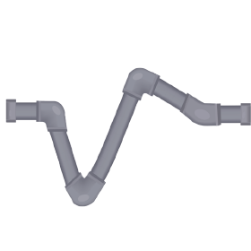
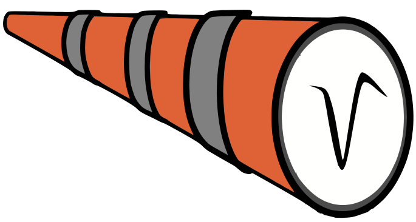

Static figures do not carry nearly as much information as interactive web applications backed by large datasets.
Idea: The web application is the figure.
Center for Computational Mathematics, Flatiron Institute
5 November 2026
Static figures do not carry nearly as much information as interactive web applications backed by large datasets.
Idea: The web application is the figure.
Create from Python (or MATLAB)
Views in a figure share state:
Data: two-photon calcium imaging in mouse primary visual cortex, Allen Brain Observatory Visual Coding (Allen Institute), streamed from the DANDI Archive (DANDI:000728)
Export as SVG button
A core principle of Figpack is that figures are always self-contained directories.
7 files, 16.4 MB
Although not a strict requirement, figure data is generally laid out using a variant of the cloud-friendly Zarr format.
By default figures expire in 24 hours. Rarely deleted though. The purpose is so there is no expectation that the figure will be available long term (different from figurl).
Unless the figure is renewed or pinned.
Multi-tier:
The full gallery of examples is in the Figpack documentation

SpikeInterface
integrated
figpack_spike_sorting
DataJoint
integrated
dj-figpack-codecs

Spyglass
future
right now it uses figurl
If you can imagine it, it's probably possible!
With coding agents... implementation is usually straightforward.
Your options:
Suppose you created a large figure, and you want to adjust colors, layout, labels, etc, or even add new views of the underlying data.
Select the "REMIX" button on the figure management page.
Chat with AI to make your one-off changes, specific to that figure.
Nice for preparing a one-off figure for a publication or presentation.
vv.TimeseriesGraph(..., allow_annotation=True) · Open in a new tab
Adding new view types
need input from users
Building more advanced annotation/curation capabilities
building into workflow
Make it easier to archive figures
host on GitHub Pages or Zenodo
What else? ...